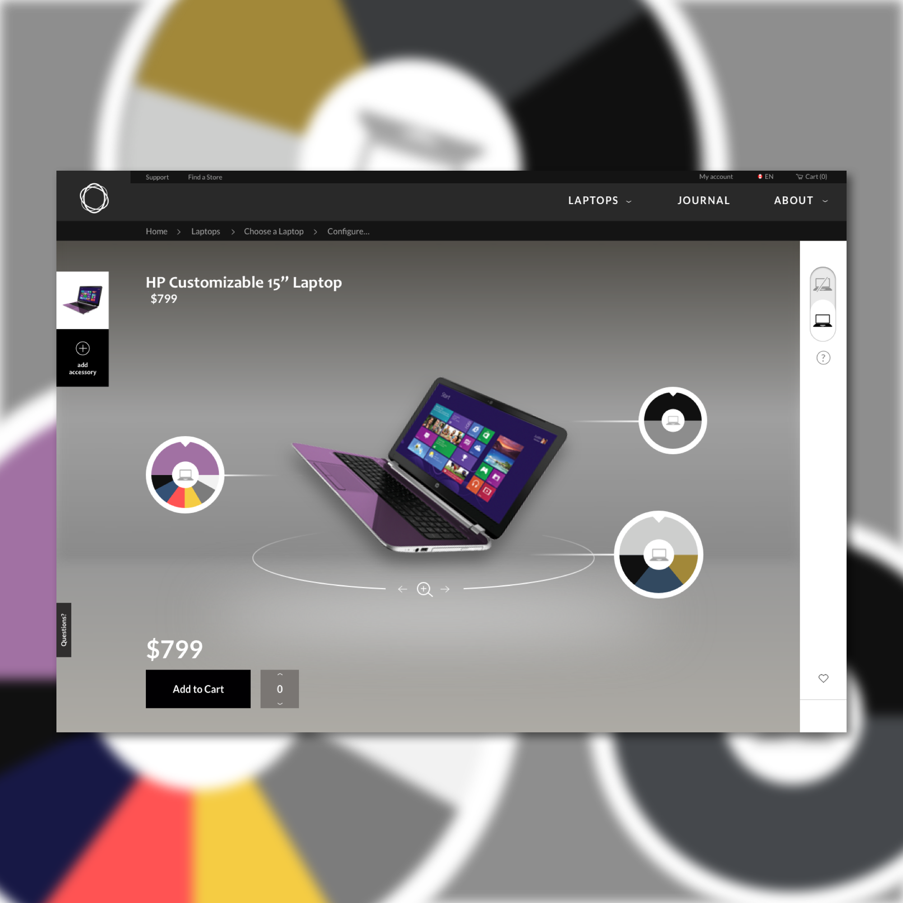

Day 100 - Customized and Finalized
I've chosen to create this design today because it shows off all the tools and techniques I have learned for the past 100 days. It may look simple, however there were a lot small designs I had to create to make the website work. If you were to tell me to design this website within an hour 100 days ago, I would definitely laugh at you. However, I am actually so proud to have completed this design within an hour today. And I would not have done it without 100 days of practice.
I want to point out the different design techniques I've learned and applied into today's design. First, the oval shape under the laptop was actually learned today. I learned the technique of opening paths using the scissors tool. The scissors tool lies under the Layer > Paths > Scissors. This easy tool helped me get rid unwanted sections along a path. Another thing I played around with was the background for this website. I created a gradient fill so that the background would be so boring. I also added a light, white shadow and placed a gaussian blur on it to make it less obvious. I would say creating the background, the shadow and the flat circle under the laptop were the highlights of this design.
As for the colour wheels, they were a lot easier to create than I thought. To be honest, I didn't know how to make each colour shape the same size on the wheel, so I did most of it by eye. I used the masking tool for these circles. Also, to create the white border around the colour wheels, I created a circle around the same size as the colour wheel, then removed the fill and changed the border thickness to 10. As for the line coming out of the colour wheel, it was important that there was a gradient on it to create a disappearing effect.
Other than the points I mentioned, I didn't find it that hard to create this design. I guess it means that I've learned quite a bit along the way?
For this design, I like how simple this website looks, but it still has quite a bit of techniques one needs to know to create it quickly.